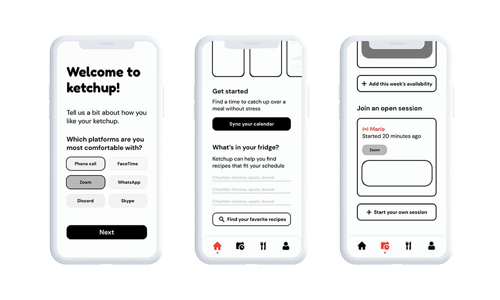

The pandemic has substantially affected the mental health and emotional well-being of teens and young adults.
Nearly four in 10 of those ages 14-22 report symptoms of moderate to severe depression — a 25% increase from 2018.
Hopelab approached my ENGR180 Human-Centered Design class to create a product, service, or experience for a teen or young adult user seeking mental health support and emotional well-being in 2021.
We wanted to rethink how people could engage with others in a more meaningful way online, especially to benefit those who want to feel supported by a community that genuinely cares about them.
Our solution was an app called Ketchup that syncs schedules between friends so that they can cook and meal plan together, simulating the atmosphere during mealtimes at college.
We started by researching questions we thought were fundamental to the project, such as:
How do we define support?
How does healing happen in a virtual space?
What barriers or challenges might there be to accessing mental health support?
We looked at studies from the CDC, New York Times articles about toxic self-care, Reddit posts, and international datasets to help structure an interview plan before we began reaching out to potential users.
Since this was such a personal topic, we developed around 22 questions with broad “themes” that we could refer back to if needed, but hoped mostly to dig deeper into our individual users’ experiences and feelings.
Interview demographics
9 participants, with the majority being teenagers and young adults, as well as a career counselor working remotely at a public high school.
Interview goals
Understanding how users experienced the online transition during the pandemic, their social media habits, and their thoughts about mental health accessibility.
Insights
Our users:
valued creating or maintaining a routine during the pandemic
struggled with motivation and feeling unfulfilled with their time
felt isolated, and hoped to quickly return to the familiar social atmosphere on campus
overwhelmingly thought that mental health resources were expensive and inaccessible
After gathering so much information in the empathy stage, defining a single persona was very difficult.
We iterated through 13+ personas with different backgrounds, needs, and insights, and eventually ended up with three:
A college student on a leave of absence, worried about the transition from student to non-student
A first-generation college student from a low income background, who feels overwhelmed by schoolwork and the commitments he has to his job and family
A career counselor at public high school, who is struggling to engage and retain student interest due to the online format
We decided to centre the first one, refining it to become:
A college student on a leave of absence, stressed and worried about the transition from student to non-student, who needs to feel supported by a community that genuinely cares about issues surrounding mental health and wellbeing to replace the support and resources she was able to access while in school.
We would have liked to have spent more time narrowing down our personas and becoming more comfortable with our users, but time constraints meant that we needed to move on to ideating.
We used 7 frames to generate 44 “how might we …” prompts.

However, while these were helpful for thinking of creative ideas, they tended to address only a small aspect of a persona or users' needs, or not at all.

After more iterations and reflecting back on our final personas, we came up with several ideas that were more tailored to our users.
We decided to start creating concepts for:
A meal sharing and planning app, aimed to help foster more connections for the student on a leave of absence
A communication-based mood lamp/bracelet/widget
A “choose your own adventure” planner

After conducting user testing, we found that there were concerns that the latter could lead to the student spiralling, rather than productively planning. We therefore chose to move forward with prototyping the meal planning + sharing app.
This idea became Ketchup, an app designed to sync schedules between friends to enable them to cook and meal plan together.
I created a simple first wireframe with sticky notes, including:
An onboarding screen with sections such as dietary restrictions and time to cook
A calendar syncing feature
Recommended meals recipe book
Friend/community screen
After testing these initial lower-resolution prototypes and further exploring storyboards, we decided to design higher-fidelty prototypes and incorporate more features from the incredibly encouraging feedback we received.
We added:
Preferred “calling” platforms to the onboarding process so that users could choose their preferred communication method
A grocery list feature that would link to the recipes in the recipe book
A sessions section so that users could easily join a call if their friends were online, rather than solely relying on pre-scheduled times
We were astounded by all of the positive feedback and comments from our user testing echoing our insights, such as acknowledging that food is healing.
This project has also reinforced the importance of having strong attention to detail, especially in the context of personas to inform development.
Addressing and tackling mental health doesn’t necessarily have to be a tangible intervention: Ketchup showed us that subtle, indirect solutions work just as well.
Developing and evolving any good idea takes time. There were moments of frustration throughout this process, but we circled back to our original interviews and personas to understand why we were doing this work in the first place.